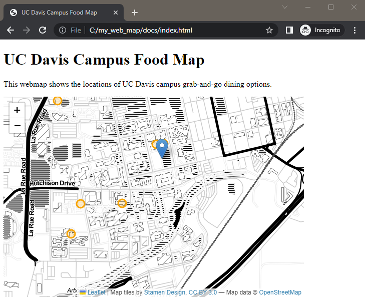

6 Use External Data
START FROM HERE: You can keep working on your code from the previous section, or use the example code up to this point in the workshop.
Adding markers by hand is great, but what if we have a lot of data? Or what if our data is more complex than a few points to add? What if we want to prepare our data in a GIS or with a script ahead of time? If any of these situations apply to the work we want to do, we probably want to load data from a data file, not writing it out in the code.
There are many methods to load an external data file in Leaflet. We’ll look at just one here, but there are ways to work with any of the common file types. Here, we’ll use data in geoJSON format.
6.1 About GeoJSON
GeoJSON is a spatial data format based on the JSON format. Both JSON and GeoJSON are open standard file formats that text-based (not binary). They store data as attribute-value pairs, such as "Name": "Bob" in our example below. You might think of this as the files storing the column name and the value for that column for a row in the table. Because they are text-based, they are human-readable (however, depending on the complexity of the data, you may not want to try to read it in a text editor). Another advantage of using a text-based format is that it can easily be stored in online version control systems like GitHub, as long as a file size isn’t too big. This is a nice feature if you want to host your webmap on GitHub Pages.
Any of the major GIS tools or programming languages can convert vector data to GeoJSON format.
The header and first line of our Campus Food data looks something like this in GeoJSON (we removed the link URLs and added white space and indents for readability):
"type": "FeatureCollection",
"name": "campus_food",
"crs": { "type": "name", "properties": { "name": "urn:ogc:def:crs:OGC:1.3:CRS84" } },
"features": [
{
"type": "Feature",
"properties": {
"Name": "CoHo Grab and Go",
"description": "Grapes, cheese, yogurt, sandwiches, etc. in a refrigerated case by the drinks",
"gx_media_links": "(URL goes here)",
"img_name": "coho.jpg" },
"geometry": { "type": "Point", "coordinates": [ -121.7497985, 38.5421103, 0.0 ] }
}
6.2 Formatting the Data
For the sake of time in this workshop, we’ve already formatted the data for you, but let’s talk about what we did.
Leaflet can’t read GeoJSON directly, but we can turn the data file into a javascript (.js) file that Leaflet can understand. All we have to do is open the .geojson file in a text editor, add var varable-name = { at the beginning of the file, and } at the end of the file (we’re “wrapping” the data in a variable declaration). Then we save the file with a .js extension (because what we’ve actually done is written a small JavaScript file). We now have a javascript file that reads data from the GeoJSON text and creates a new variable containing our data.
We’ve done this for you to create the campus_food.js file, declaring our variable as campus_food. You can see the GeoJSON structure and the variable declaration if you open the file in a text editor.
6.3 Read the Data
To read the data into our webpage, we need to add another short script section, just above the one we’ve been working in that calls our campus_food.js data file.
<body>
<h1>UC Davis Campus Food Map</h1>
<p>This webmap shows the locations of UC Davis campus grab-and-go dining options.</p>
<div id="mapid" style="width: 600px; height: 400px;"></div>
<highlight><script src="campus_food.js" type="text/javascript"></script></highlight>
<script>Now the data in this file will be available to load into our map.
NOTE: You could put this script in the <head> of the document where we loaded the Leaflet and CSS scripts. I like to keep all the map code together for teaching purposes (less scrolling around). Both are valid and work the same.
6.4 Add Data to the Map
This is the moment you’ve been waiting for! We’ll add data from our external data file to the map.
Add this code to the bottom of your long script section (below where we made our marker for the Quad and above the closing </script> tag):
<highlight>
//add food points from the GeoJSON (campus_food.js) file
var foodpoints = L.geoJSON(campus_food, {
pointToLayer: function(feature, latlng){
return L.circleMarker(latlng, {color: 'orange', radius: 8});
}
}).addTo(foodmap);
</highlight>
</script>We now have many orange circles for our dining spots (and one for the quad that we added earlier)!

What does this code do though?
First, we create a variable called foodpoints using the geojson data which we named campus_food inside the .js file. Then we create a function called pointToLayer that uses the parameters feature (each row in the data) and latlng (the geometry) from the geojson data. We make a circleMarker using the latlng variable for the position, and use the style options between the {}s to style the marker the way we want it. In this case, it’s orange and has a radius of 8 (which is a little smaller than the default). Finally, we add the entire set of markers we built to the map (remember that we called our div that holds our map foodmap).
CHECK YOUR WORK: Compare your code with example code up to this point in the workshop.